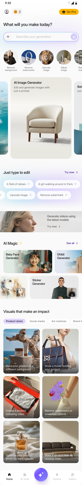
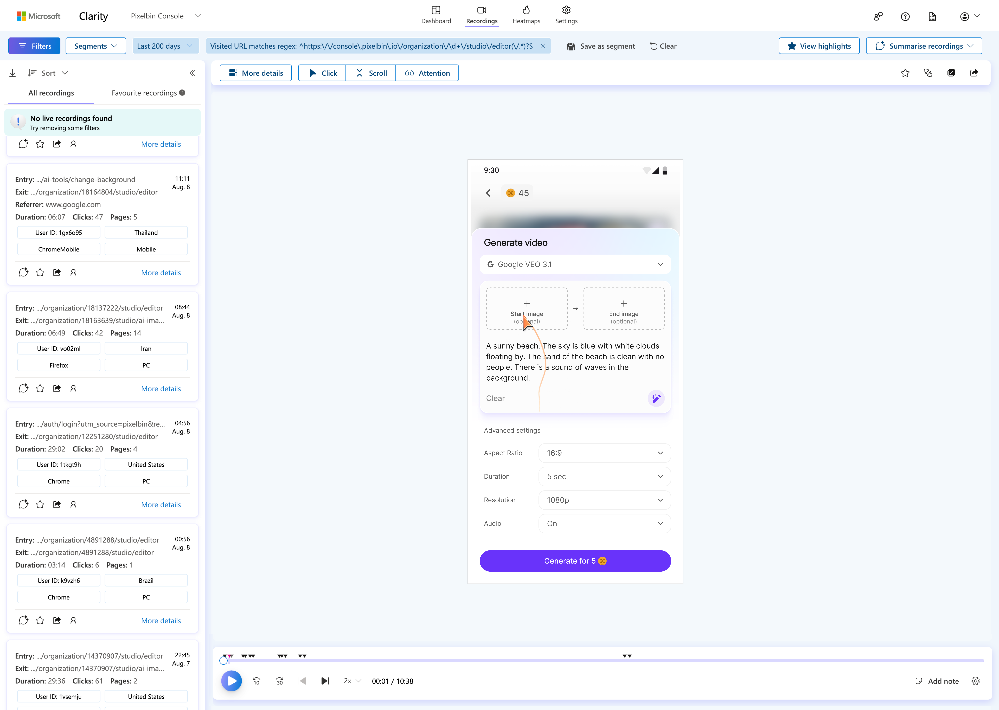
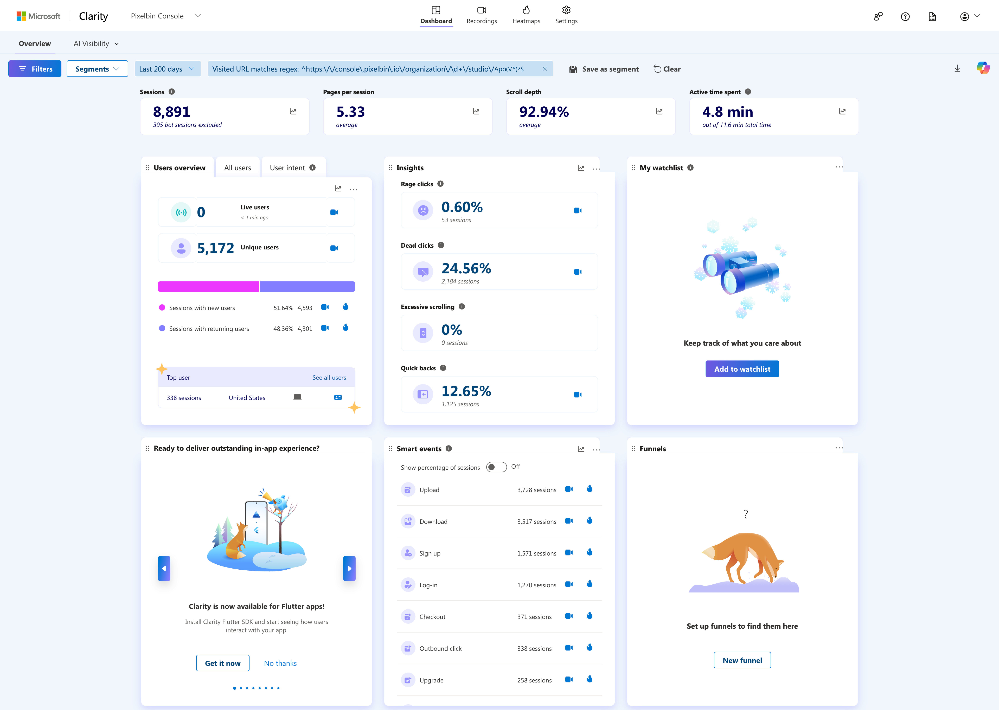
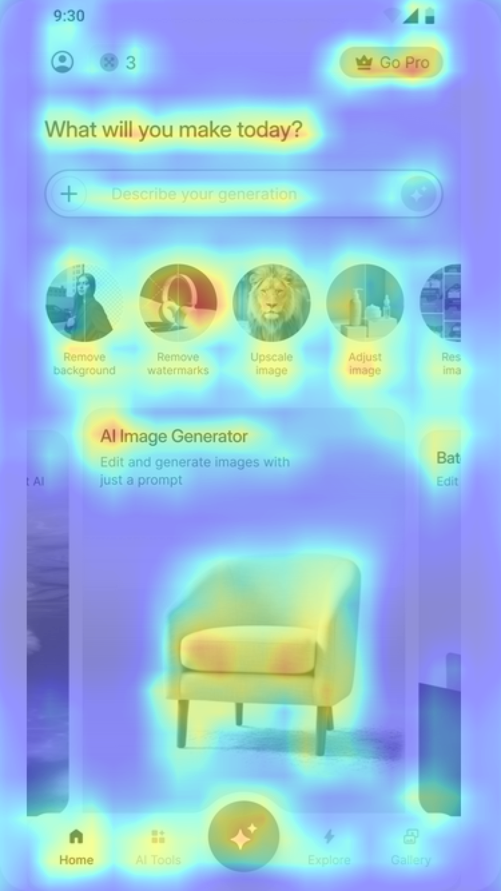
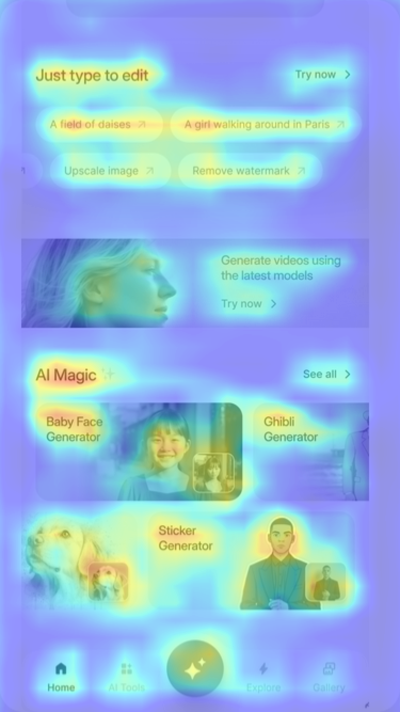
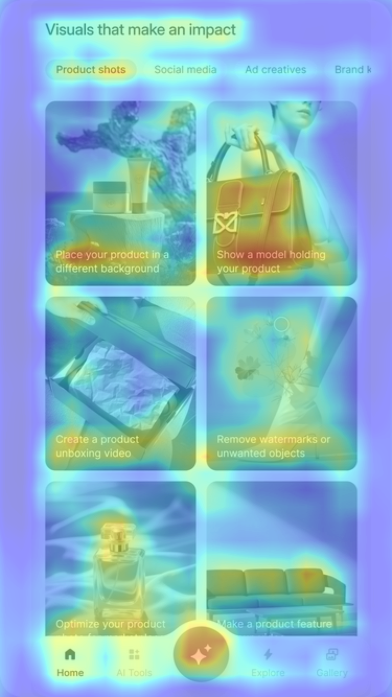
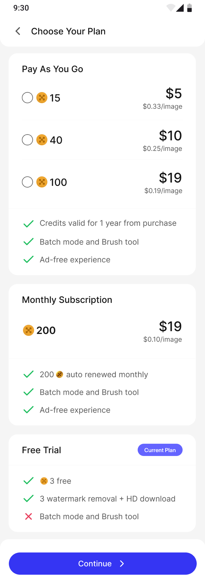
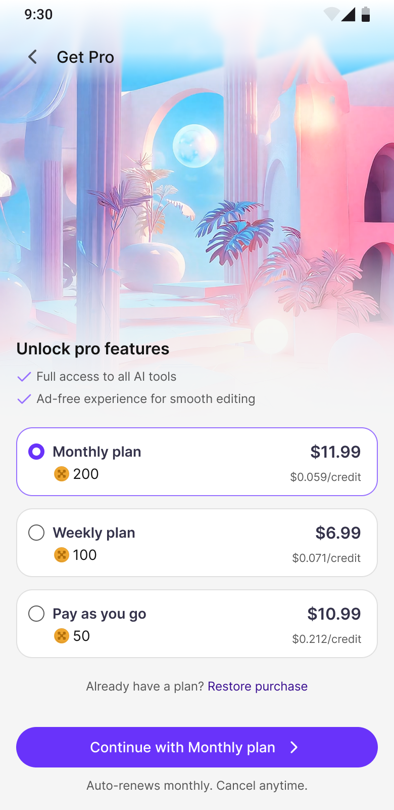

The Ice Breaker
What Happens When the
User Has No Prompt?
A prompt bar alone loses first-time users. They open the app, see a blinking cursor, and leave. The Home screen can't assume intent — it has to create it. Every section below exists to catch users the prompt bar misses.
"Half the population in rich countries is not articulate enough to get good results from current AI." — Jakob Nielsen, NN/g 2023
Annotations listed here ↓
Intent-first, not tool-first. The heading asks what the user wants — not which tool to use. Credits badge (🔥 3) and Go Pro sit in the top bar — monetisation visible but never blocking creation.
Natural language as primary input. Users describe what they want instead of picking tools. The + button uploads images into the prompt context. The ✨ sparkle enhances vague prompts using AI.
Progressive Disclosure — Nielsen, NN/g 2006: "People understand a system better when you help them prioritize features."
Before/after thumbnails for users who know the task but can't describe it. They think "remove a background" — they don't think in prompts. Tap the transformation, skip the typing.
Hick's Law — Hick & Hyman, 1952: decision time grows with the number of choices. The carousel pre-filters infinity into a bounded set.
Large visual cards showing AI outputs — a product photo, a batch edit. Not feature lists. Not tool names. Outputs. The user sees what's possible before deciding what to make. Content as invitation, not controls.
Empty State Design — Kaplan, NN/g 2021: "Do not default to totally empty states."
Pre-written prompt examples — "A field of daisies," "A girl walking around in Paris." Users learn the language of AI interaction by seeing real prompts. Also the fix for the V4 blank-canvas failure.
Recognition Over Recall — Budiu, NN/g 2024: showing options is cognitively easier than asking users to generate from memory.
Users who came for images discover video generation without navigating away. A preview card with "Generate videos using the latest models" and a direct "Try now" CTA. Cross-selling within context, not through a separate tab.
Viral AI effects surfaced on the Home screen — Baby Face Generator, Ghibli Generator, Sticker Generator. These ride cultural trends and give first-time users a low-commitment entry point: "try this fun thing" before committing to a serious workflow.
Category-driven discovery — Product shots, Social media, Ad creatives, Brand kits. Users find their use case, not a tool. Each card shows a real output with a clear action: "Place your product in a different background," "Create a product unboxing video." Intent-based, not feature-based.
Five tabs map to five intents: make (Home), browse (AI Tools), create (✦), discover (Explore), review (Gallery). The floating ✦ button is visible on every tab — creation is a global action, not a destination. One tap from any context.
Paradox of the Active User — Carroll & Rosson, IBM 1987: "Users never read manuals but start using the software immediately."
The Home Screen · Full Scroll

Thumb Zone
Where Do
Thumbs
Actually Go?
The average mobile session is 72 seconds. Users hold their phone with one hand — often while commuting, in a queue, between meetings. Every primary interaction on the Home screen sits in the bottom 40% of the display, inside the natural thumb arc.
Microsoft Clarity tracked 8,891 sessions across the PixelBin editor. The data confirms the design hypothesis: interactions concentrate on creation actions, not navigation. 92.94% scroll depth means users reach the bottom. 0.60% rage clicks means the UI is clear. 0% excessive scrolling means the content density is right.

Session Recording · Real user interaction

Dashboard · 8,891 sessions · Last 200 days
1 / 3 · Above the fold

2 / 3 · Mid-scroll

3 / 3 · Bottom scroll

Microsoft Clarity · Live interaction data · PixelBin Home Screen
What the Recordings Showed
We Stopped
Designing for
Comparison
We watched 50 session recordings. Users weren't comparing plans. They were deciding whether to pay at all. The decision had already been made before they reached the pricing screen — during the creation flow. Users who had a successful first generation were ready to pay. Users who hadn't were going to leave regardless of how the plans were arranged.
The old screen treated pricing as a comparison problem — 5 options, feature matrices, checkmarks and crosses. But recordings showed two behaviours: scroll past everything and hit back, or tap the first option and continue. Nobody was weighing credits per dollar.
So we redesigned for conviction, not comparison. The hero image sets an emotional tone — this is premium, not a billing page. Two checkmarks confirm value without creating doubt. Monthly pre-selected gives users a decision instead of asking for one. "Auto-renews monthly. Cancel anytime." kills the last objection before they tap.
Before — Choose Your Plan

After — Get Pro

5 choices with feature comparison. Free Trial shown as "Current Plan" — reminds users they can stay free. Generic "Continue" CTA. No visual hierarchy. Users scrolled, compared, hesitated, left.
3 choices with Monthly pre-selected. Free Trial removed. Hero image adds aspiration. "Continue with Monthly plan" — specific, transparent. Weekly ($6.99) exists as a safety net for the hesitant 10-15%.
From blank canvas to conviction.
Every layer serves a different
temperature of intent.
The Home screen builds intent. The creation flow builds trust. The pricing screen converts conviction. One loop — observed through 8,891 Clarity sessions.